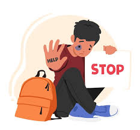

Estrategias
Estrategias para evitar la violencia y el acoso escolar 1. Fomentar una cultura de respeto
2. Capacitar a docentes y personal escolar
3. Fomentar la comunicación abierta
4. Involucrar a los padres de familia
5. Implementar programas antiacoso escolar
6. Desarrollar habilidades socioemocionales